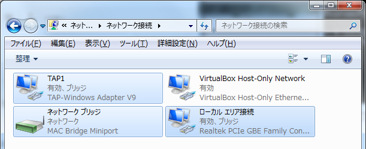
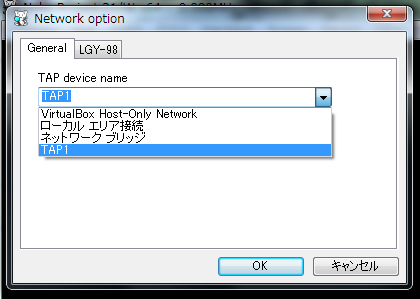

Neko Project 21/WのLAN設定
Neko Project 21/WはMELCO LGY-98 LANボードを搭載していますが、実際に外部ネットワークに繋ぐまでの手順が若干わかりにくいのでここに書いておきます。VMwareのネットワークブリッジとケンカするという噂もあるのでそのあたりは要注意。
↓TAP-Win32についてはこのページの方が詳しいかもしれません
TAP-Win32 のインストールおよび設定方法（リンク切れのためInternet Archiveへのリンク）
- OpenVPNに含まれるTAP-Win32を入手してインストールしてください。必要となるのは「TAP Virtual Ethernet Adapter」のみなので、OpenVPNの本体などをインストールする必要はありません。
-
TAP-Win32をインストールするとケーブル未接続のアダプタ（TAPアダプタ）が出現するので、それと外部ネットワークに接続できるアダプタをブリッジ接続してください。このときにTAPアダプタをわかりやすい名前にしておくと後の設定で楽です。

-
Neko Project 21/WのNetwork Optionでブリッジ接続したTAPアダプタを選択してください。TAPではないアダプタも選べますが選んでも無意味です。

-
これで設定は完了です。
トップに戻る